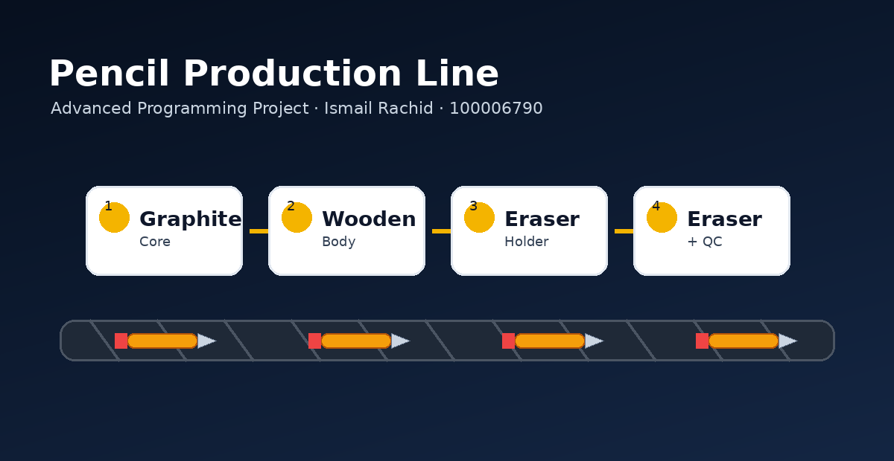
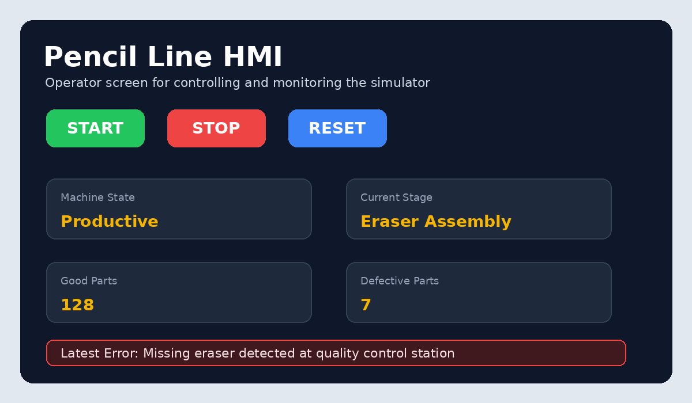
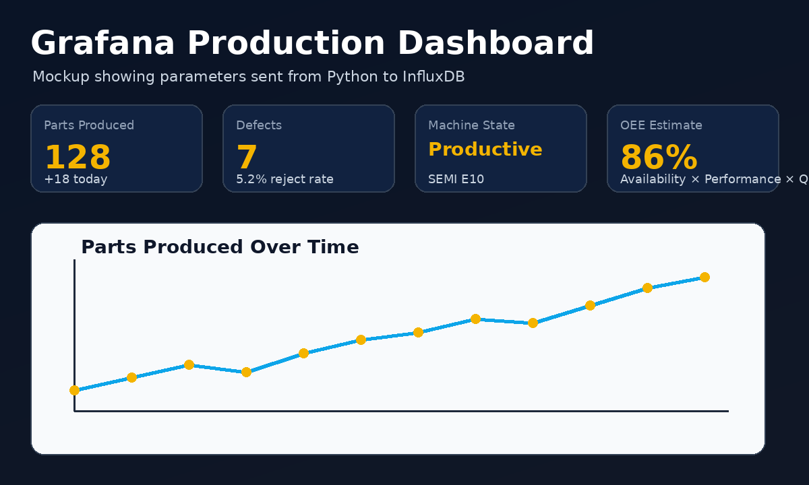
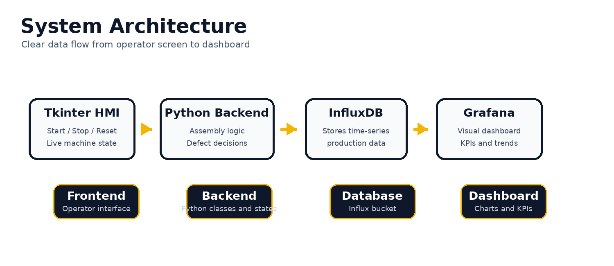

Pencil Production Line Simulator
A complete Python manufacturing simulator with an HMI, defect detection, database logging, Grafana dashboard concept, Git/GitHub documentation, and a professional project website.

Production Stations
Graphite core, wooden body, eraser holder, and eraser/quality control.
Operator Control
Start, stop, reset, live state display, product counters, and error messages.
Monitoring Stack
InfluxDB stores production values and Grafana visualizes performance trends.
Project Gallery




Project Overview
What the simulator does
The project simulates a production line that assembles pencils step by step. The backend controls the process, the HMI gives the operator buttons and feedback, and the system detects defective products when a component is missing or incorrectly assembled.
Why a pencil was selected
A pencil has clear components and a simple assembly order. This makes it a strong example for showing manufacturing stages, quality control, machine states, and production data logging without making the project unnecessarily confusing.
Website Sections
Industrial Concepts Covered
HMI + Back End Separation
The user interface is separated from the production logic so the code is cleaner and easier to explain.
SEMI E10 / OEE
Machine states and production quality are presented as manufacturing performance indicators.
MES Historian Idea
InfluxDB and Grafana act as a small learning version of a factory data historian.